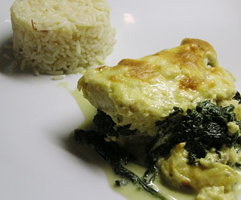

Sogliola alla fiorentina (Seezunge mit Spinat)
5 von 6750 g frischer Spinat in einer Pfanne mit 2 EL Weisswein, Salz und Pfeffer sowie einer Knoblauchzehe erhitzen bis er zusammen fällt, beiseite stellen. Für die Sauce 1 kleine Zwiebel fein hacken und in 1 EL Butter glasig dünsten. 1 TL gehackter Rosmarin darüber geben. 2.5 Dl Milch angiessen, salzen und pfeffern und kurz aufkochen. In einem Topf 1 EL Butter schmelzen, 1 EL Mehl hineinrühren, anschwitzen. Die Rosmarinmilch und 2 DL Rahm b eigeben, etwas einkochen. 2 Eigelb und 3 EL Parmesan unterrühren. In eine feuerfeste Form die Hälfte der 500 g Seezungenfilets verteilen. Den Spinat und dann die andere Hälfte Fisch darüber verteilen. Mit der Sauce begiessen und im vorgeheizten Backofen bei 200 Grad ca. 15 überbacken.
